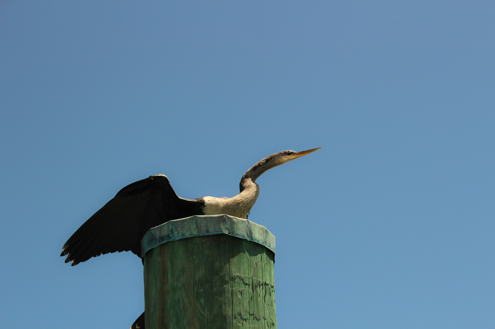

The Oriental Darter is a long-necked waterbird that often swims with only its head and neck above the water, giving it the appearance of a snake. It is an excellent underwater hunter and spears fish with its sharp bill. After feeding, it commonly perches with its wings spread to dry its feathers. It is found in freshwater wetlands, rivers, lakes, marshes, and reservoirs. Compared with the similar Indian Cormorant, it is distinguished by the combination of features described above. Its preference for lakes, rivers, marshes, reservoirs, ponds, and freshwater wetlands also helps separate it from species that use different habitats. Its characteristic behaviour, including swims with much of its body submerged and spears fish underwater, provides another useful field clue. Taken together, these differences make it easier to distinguish from similar species when the bird is seen clearly.